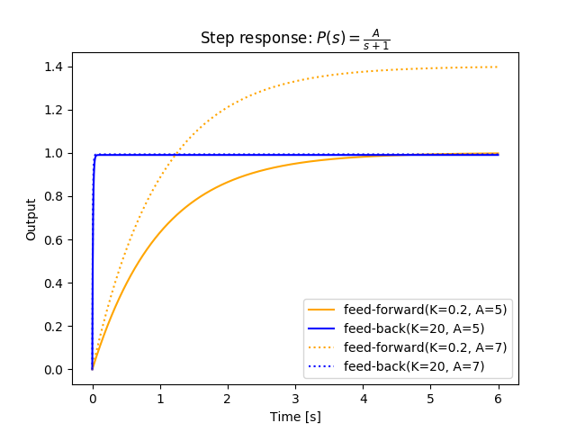

フィードバック制御系の特性
フィードバック制御系はフィードフォワード制御系と比較して次のような特性を持つ。
- 制御対象のパラメーターの変動の影響を受けづらい
- 入力の変動時の速応性が改善される
- 外乱に強くなる
- 定常特性が改善される
ここでは制御対象が1次系、制御機が定数ゲインの制御システムを例に解説していく。
伝達関数
上記のシステムのフィードフォワード系とフィードバック系の伝達関数はそれぞれ次のようになる。
感度特性
下の図を見てわかるように、フィードフォワード制御系では制御対象のパラメーターの変動・誤差（ここではA：5→7）がそのまま現れてしまう。
一方、フィードバック制御系ではゲインを大きくするほど変動の影響が大幅に減少し速応性が改善される。
制御対象の伝達関数がのように変化したとき、系全体の伝達関数がと変化したとすると、双方の変動率には
のような関係がある。この比率を 感度関数（sensitivity function） と呼ぶ。

外乱に対する感度特性
への入力にの外乱が混ざるとする。このとき外乱が出力に与える変化量はフィードフォワード系・フィードバック系でそれぞれ
となるため、先ほどの条件下では
となる。
ここから、フィードバック系は外乱に対しても強くなることが確認できる。
定常特性
フィードフォワード系では系全体で厳密にであれば制御量は目標値に収束するが、フィードバック系では理論上で目標値と制御量の間に偏差が生まれる。
追従偏差を とすると、閉ループを一巡したときの伝達関数（一巡伝達関数 ・ 開ループ伝達関数）はであるため、
となる。
以下で確認できるように、位置・速度・加速度のいずれにおいてもゲインを高くするほど偏差は小さくなる。
ステップ入力
のステップ入力の定常偏差（steady-state error）は
となる。ステップ入力の定常偏差を特に 定常位置偏差（steady-state position error） 、を 位置偏差定数（position error constant） と呼ぶ。
ランプ入力
のランプ入力の定常偏差は
となる。ランプ入力の定常偏差を特に 定常速度偏差（steady-state velocity error） 、を 速度偏差定数（velocity error constant） と呼ぶ。
一定加速度入力
の一定加速度入力の定常偏差は
となる。一定加速度入力の定常偏差を特に 定常加速度偏差（steady-state acceleration error） 、を 加速度偏差定数（acceleration error constant） と呼ぶ。
偏差の修正
グラフのソースコード
Python 3.6.1, matplotlib 2.0.1, control 0.7.0
from control import matlab
import matplotlib.pyplot as plt
import numpy as np
t = np.arange(0, 6, 0.001)
#A=5
tf_p = matlab.tf([5], [1, 1]) #制御対象（τ=1）
#フィードフォワード
tf_k1 = matlab.tf([0.2], [1]) #制御器（ゲイン:0.2）
forward = tf_k1 * tf_p
#フィードバック
tf_k2 = matlab.tf([20], [1]) #制御器（ゲイン:20）
back = matlab.feedback(tf_k2*tf_p, 1, -1)
y_out, t_out = matlab.step(forward, t)
plt.plot(t_out, y_out, c='orange', label='feed-forward(K=0.2, A=5)')
y_out, t_out = matlab.step(back, t)
plt.plot(t_out, y_out, c='blue', label='feed-back(K=20, A=5)')
#----------
#A=7
tf_p = matlab.tf([7], [1, 1]) #制御対象（τ=1）
#フィードフォワード
tf_k1 = matlab.tf([0.2], [1]) #制御器（ゲイン:0.2）
forward = tf_k1 * tf_p
#フィードバック
tf_k2 = matlab.tf([20], [1]) #制御器（ゲイン:20）
back = matlab.feedback(tf_k2*tf_p, 1, -1)
y_out, t_out = matlab.step(forward, t)
plt.plot(t_out, y_out, c='orange', linestyle=':', label='feed-forward(K=0.2, A=7)')
y_out, t_out = matlab.step(back, t)
plt.plot(t_out, y_out, c='blue', linestyle=':', label='feed-back(K=20, A=7)')
plt.title('Step response: $P(s)=\\frac{A}{s+1}$')
plt.xlabel('Time [s]')
plt.ylabel('Output')
plt.legend()
plt.show()